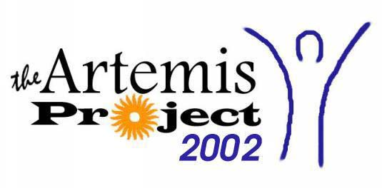

Welcome to the Artemis Project 2002! Artemis is a five week summer day camp for rising 9th grade girls in the Providence area. It is run by four Brown undergraduate women, in connection with the Brown University Computer Science Department.
Artemis is designed to encourage young women in
science and technology. The students will learn both concrete computer skills and abstract computer science concepts through a variety of projects and activities, in a positive and encouraging environment. Some of this year's projects include: